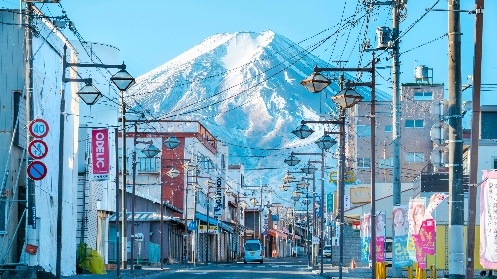

Culture Japanese tea ceremony: a symbol of harmony and respect. Kimono: celebrating tradition and beauty. Manga culture: creative storytelling and vibrant art.
Cusine Ramen: hearty noodles, a comfort food favorite. Sushi: fresh ingredients and delicate presentation. Mochi: sweet rice cakes filled with delicious surprises.
Well-know places Itsukushima Shrine: iconic floating torii gate on the sea. Japanese gardens: Peaceful nature retreats.  Mount Fuji: Japan’s iconic mountain..